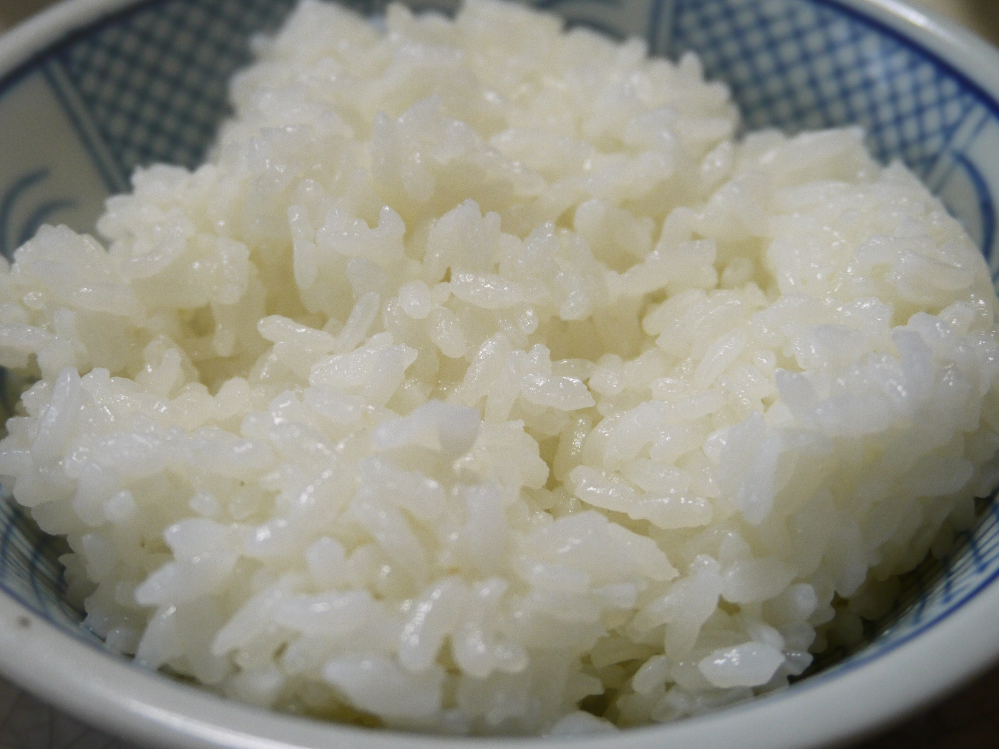

Sushi is one of the most popular japanese foods on the west and even tho it may seem like a luxorious meal, it's surprisingly easy to make at home. But like with everything, the devil is in the details and the only secret to get sushi right, is to get every part of it right.
So let's start with the rice. Sushi rice consists of steamed short grain white rice flavoured with a mixture of rice vinegar, salt and sugar. The choice of rice is very important here, as not any rice and not even every short grain rice would work. The one I use is Koshihikari. This is a rice variety that can be easily foud in Argentina. If you are unable to find it, rice marketed as "sushi rice" would work too, just make sure the dosen't look long and thin but rather short and rounded.
The vinegar mix is the key part to get the signature flavor we are looking for. Rice vinegar is the standard and traditional one to use, if you are unable to find it, other grain based ones should work similarly. The rice to vinegar ratio is as it folows, 2 tablespoon of vinegar, 1 tablespoon of sugar and 1 teaspoon of salt per 1 cup of raw rice. You may also find when shopping for rice vinegar something labeled as "sushi vinegar". This premade mixtures are just a combination of these three ingredients (plus other conservatives) in a more convinient format. If using one of these, replace as much vinegar as you would've use with the mixture (as a rule of thumb, usually these premade ones aren't as strong in flavor so you might want to add a bit more, but that's to taste).
The cooking of the rice is almost the same as any regular white rice would be, but there's a couple considerations to keep in mind:
Once our rice is done cooking we are gonna transfer it all away from the hot pot (ideally this would be to a wood "tub" called a Hangari, but any large recipient that gives the rice ample space to cool down is fine) and as it's still hot we are gonna start mixing in our vinegar. We are gonna mix it all up using "slashing" motions with our tool, being mindfull of not mushing the rice. As we mix it well, once it has cooled to a room temperature we are going to cover it with a dampened cloth and leave it to cool for as long as we can. The rice will absorb more of the flavor the longer it gets, so it's a good idea to make sushi rice early to eat for dinner or lunch.